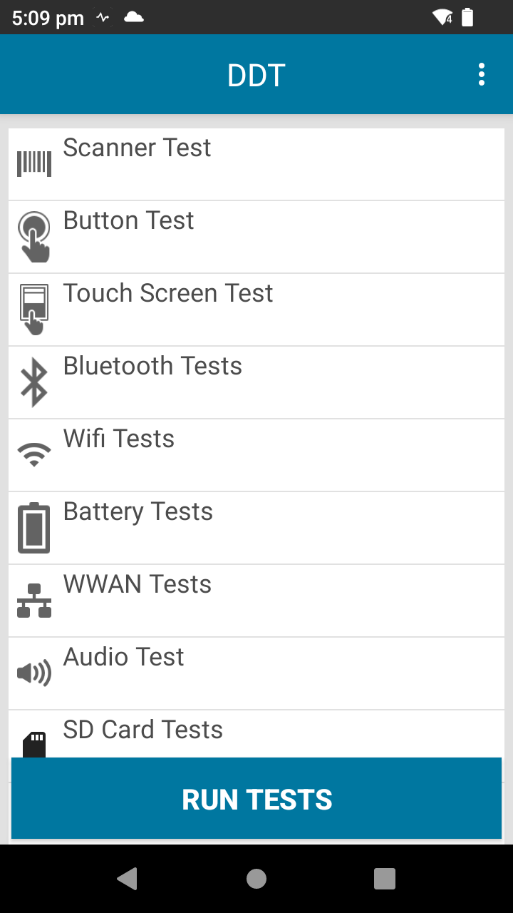
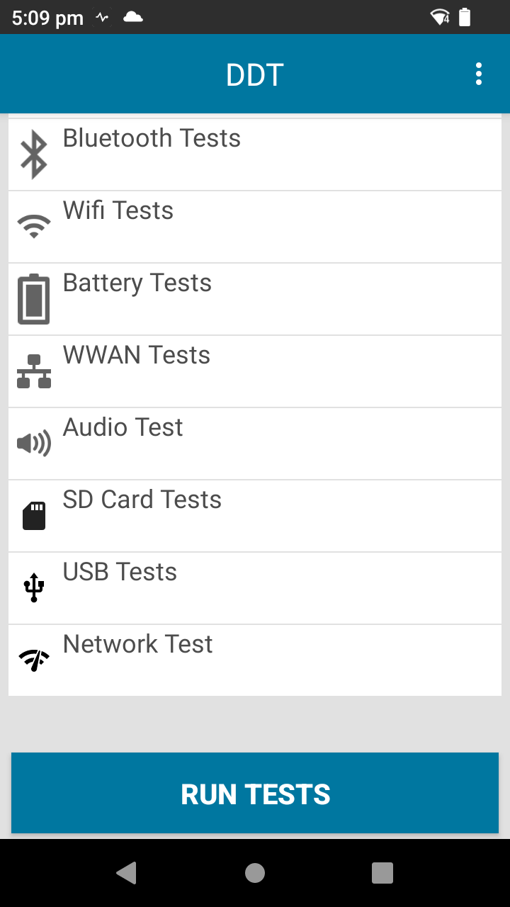

Overview
Device Diagnostic Tool supports two modes of operation:
- Admin mode - The administrator can access app settings, modify test configurations and run each individual test. This is the default mode.
- User mode - The user is restricted to only run tests. There is no access to app settings, test configurations nor individual tests. To set user mode, disable admin_mode as referenced in the Configuration section.
Launch the App
Run Device Diagnostic Tool using one of the following methods:
- Manually using the User Interface - The user launches Device Diagnostic Tool and runs the tests manually. See User Interface section below.
- Remotely with an EMM (Enterprise Mobility Management) system - Launch Device Diagnostic Tool in the background and generate a log using command:
adb shell am broadcast -n "com.zebra.mdna.selfdiagnostics/com.symbol.selfdiagnostics.SESReceiver"
Only one of the methods should be used to run Device Diagnostic Tool, otherwise unexpected behavior can occur.
Device Tests
When launching the app for the first time, the main screen displays the tests available to run:
|  |  |
Main screen
If tests have already been conducted, the test name is followed by the date when the last test was conducted.
Tap Run Tests from the main screen to execute all the tests. Test execution is based on the tests selected in the Configure Tests screen. Once the test is initiated, the user is prompted to perform additional actions during test execution of the following: Scanner Test, Button Test, Touch Screen Test, and Audio Test. It is recommended for all tests to be performed while the device is in normal use, i.e. not docked in a cradle or connected via USB to a computer. Once testing is complete, the results are displayed:
 Pass - Test executed and passed. Result passed test criteria.
Pass - Test executed and passed. Result passed test criteria.
 Fail -Test executed and did not meet the test criteria.
Fail -Test executed and did not meet the test criteria.
 Information -Data retrieved and displayed.
Information -Data retrieved and displayed.
Alternatively, in admin mode individual tests can be performed by tapping on the individual test category and then tapping Run Tests.
Test failed and test timed-out result to the same red hazard icon.
Help option is available by tapping on the top right menu of the main screen. This links to the Device Diagnostics Tool support portal.
Scanner Test
The user is prompted to scan a barcode. Results:
- Scanner Test – displays barcode data
- Label Type – displays barcode type or decoder scanned
Note: When performing the Scanner Test on TC55, the user must long press the scanner button for it to be detected.
Button Test
The user is prompted to press the hard buttons on the device: scan trigger (left or right), push-to-talk, volume up, and volume down. Results:
- Button Test – test successful, test failed, or test timed-out
If physical key buttons are remapped on the device, the `button_config.xml` file must be updated with the appropriate key value and the file must be deployed to the device. See Button Configuration File for instructions.
Touch Screen Test
The user is prompted to touch each grid box on the screen
- Touch Screen Test – test successful, test failed, or test timed-out
Bluetooth Tests
Checks whether the Bluetooth radio is operable and returns Bluetooth related information. Results:
- Name – displays the Bluetooth name
- Radio Power Cycle – test successful or test failed. The state of the radio is preserved prior to this test.
- Functional/Non-functional – functional or non-functional
- Discoverable/Connectable - connectable, discoverable, or none
WiFi Test
Checks for operation of the WiFi radio and returns WiFi related information. Results:
MAC Address – valid or invalid
Network Test – displays connected or not connected. Tests for connectivity through WiFi based on a ping request. Failure occurs if the WiFi is not connected to any network. The state of the radio is preserved prior to this test. If this test is successful, the following values are displayed:
- strength – displays signal strength
- ip – displays IP address
- bssid – valid or invalid
- speed – displays connection speed
Battery Test
Checks the battery status and returns battery related information. Results:
- Part number – displays the part number
- Serial number – displays the serial number
- Manufacture date – displays the battery date of manufacture
- Battery Health – displays the health of the battery as:
- Good – the battery is in a healthy state
- Need to replace battery – the charge cycle count (for PowerPrecision batteries) or the setting retrieved from the internal Zebra framework (for PowerPrecision+ batteries) has reached the Battery Threshold value, indicating that the battery should be replaced with a new one soon.
- Unknown – indicates a problem retrieving the battery health information
- Voltage – displays the voltage
- Current – displays the current
- Temperature – displays the temperature
- Level - displays the percentage (%) of remaining battery
- Current Capacity - displays the amount of energy stored in the battery in mAh (milliampere hour). Only supported with PowerPrecision+ batteries.
WWAN Test
Checks the operation of the WWAN radio and returns related WWAN information. Results:
- Sim State – Airplane mode must be disabled. Displays one of the following values:
- Present – sim card is present
- Absent – sim card is not present
- Voice State - displays one of the following values:
- Voice in service
- Voice out of service
- Voice Emergency only
- Voice power off
- Unknown voice
- Data State – displays one of the following values:
- Data connected
- Data disconnected
- Data connecting
- Data suspended
- Unknown data
- WAN Type – displays the network type, such as: LTE, 2G, 3G, 4G, or Not Available
- Signal Strength – displays one of the following:
- Not applicable - SIM card absent
- Unknown – device could be in airplane mode
- Signal strength - in dBm
- Phone Number – valid or invalid, depending on whether or not the phone number is exposed by the service provider.
- Device ID – valid or invalid, depending on whether or not the device ID is exposed
Audio Test
Checks for operation of the device microphone and speaker. Results:
- Audio Test – test successful or test failed
SD Card Test
Checks external SD card status and information. The SD card must be mounted as portable storage in order to be detected. If the SD card is mounted as internal storage, DDT does not detect it. This applies similarly when formatting SD cards - only SD cards formatted as portable storage are detected by DDT. Results:
- SD Card - present or absent
- Read - passed or not applicable
- Write - passed or not applicable
- Total Space - amount of total space on SD card in GB or not available
- Free Space - amount of free space on SD card in GB or not available
USB Test
Checks the functionality of the USB port on the device.
- USB Host Connected – displays one of the following:
- Connected - device USB port is connected to a host with a cable
- Not Connected – device USB port is not connected to a host
- USB Accessory – displays one of the following:
- Connected - device USB port is connected to an accessory (e.g. headset, SD card reader, etc.)
- Not Connected – device USB port is not connected to an accessory
- USB Modes – displays one of the following:
- Charging - device is charging
- PTP – Picture Transfer Protocol; transfers images from the connected host
- File Transfer – transfers files from the connected host
- MIDI – Musical Instrument Digital Interface; transfers music media from the connected host
- No Modes - none of the modes
Network Test
Checks whether the device can connect to a WLAN or WAN network based on URL specified.
- General connectivity - displays one of the following:
- Connected
- Not Connected
Upload Logs
The configuration file and log files and can be uploaded on demand from the device to an FTP server. The files uploaded include: test result logs, configuration.xml, history log, and status log. To access this feature, from the main app screen tap the options menu at the top right and select Upload.
Upload screen options:
- Protocol - FTP (default value), only option available
- IP Address - enter the IP address of the FTP server (required)
- UserName - enter the user name to login (required)
- Delete File From Device - if enabled, deletes all files (configuration and log files) from the device after the upload is complete.
If Server Details are entered in the Settings screen, these options are automatically populated and can be edited if necessary.
After entering the appropriate information, tap Upload. Enter the FTP password when prompted. If successful, the files are uploaded to the FTP server in a .zip file with the file format DDTLOG_[TimeStamp(ddMMyyyyHHmmss)]_[device_identifier].zip, where:
- [TimeStamp(ddMMyyyyHHmmss)] is the timestamp in 2 digit day, 2 digit month, 4 digit year, 2 digit hour, 2 digit minute and 2 digit seconds.
- [device_identifier] is the unique identifier for the device, displaying one of the following based on the Android platform:
- UUID - applies to Android 10 and later devices
- Serial number - applies to Android Oreo and earlier devices
Schedule Jobs
Device tests can be scheduled to perform at a specified time. Once a job is scheduled, it automatically repeats at the specified time on a weekly basis. The scheduled job can be deleted after completion to prevent it from repeating again. Only device tests that do not involve user interaction can be scheduled. When a scheduled job is complete, it is logged in /storage/emulated/0/Android/data/com.symbol.selfdiagnostics/files/history.log.
To schedule a job:
- From the main app screen tap the options menu at the top right and select Job Scheduler.
- In the Job Scheduler screen, tap "+" button to create a job.
- Select the time in hours/minutes to perform the job.
- Select the device test to perform.
- Select the day of the week for the test to be performed.
- Tap the save icon at the top right.
To modify an existing scheduled job:
- In the Job Scheduler screen, tap on a scheduled job listed.
- Make the necessary changes.
- Tap the save icon at the top right.
To delete an existing scheduled job:
- In the Job Scheduler screen, tap on a scheduled job listed.
- Tap the trash icon at the top right.